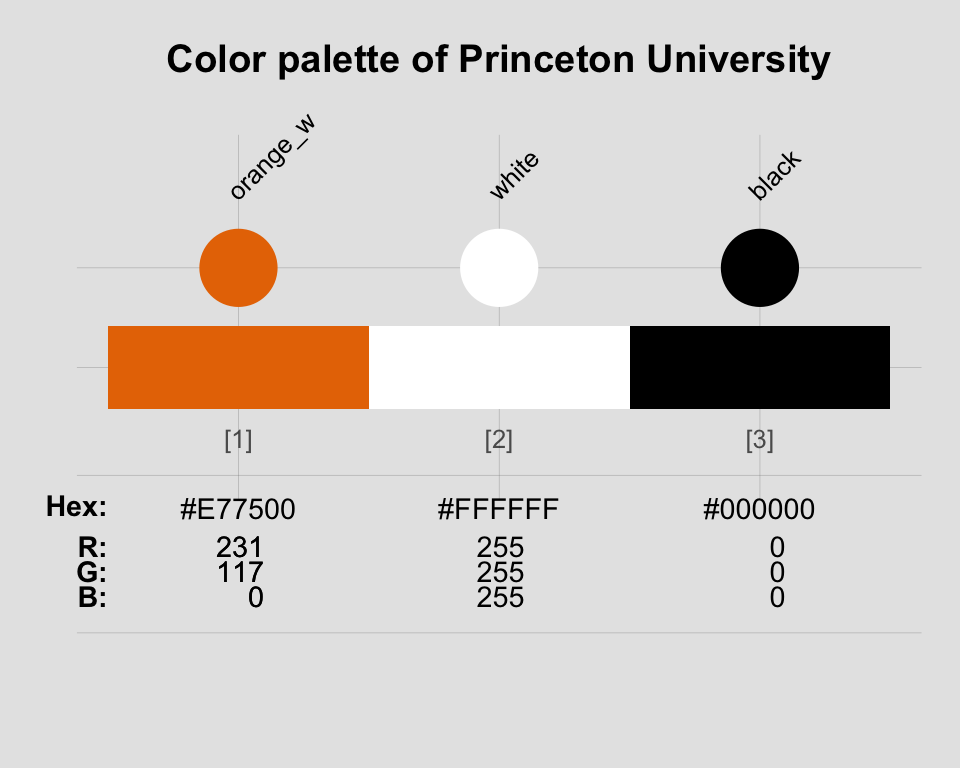

This vignette shows how the color-related tools provided by unikn can be applied to other institutions. (For a general introduction of the unikn colors, color palettes, and color functions, see the vignette on Colors and color palettes. The vignette on text provides information on creating text boxes and decorations.)
The color palettes included in the unikn package are based on the CD manual of the University of Konstanz, Germany. However, the functionality provided by the package makes it easy and straightforward to define and use your own color scales. In the following, we provide examples to illustrate how this can be achieved for other institutions.
Please install and/or load the unikn package to get started:
# install.packages('unikn') # install unikn from CRAN client library('unikn') # loads the package
Defining colors and color palettes
The following examples show how to define color palettes (with dedicated color names) for three institutions. They can be easily adapted to any other group, company, or entity, that uses some pre-defined set of colors.
A. University of Freiburg, Germany:

The Albert-Ludwigs Universität Freiburg provides fairly extensive information on its corporate color scheme (available here and here). Colors can be defined in a variety of ways, but R comes with convenient tools (like col2rgb and convertColor in grDevices) to handle most cases. The most straightforward way of creating a new color palette in R is by using its HEX/HTML code (provided in character format). As the University of Freiburg kindly provides their colors in this format, we can easily define the corresponding color palettes as named vectors:
# Basic colors: https://www.zuv.uni-freiburg.de/service/cd/cd-manual/farbwelt pal_freiburg_bluered <- c("#004a99", "#c1002a") names(pal_freiburg_bluered) <- c("uni-blau", "uni-rot") pal_freiburg_basic <- c("#004a99", "white", "#c1002a") # add "white" for better gradients names(pal_freiburg_basic) <- c("uni-blau", "weiss", "uni-rot") # Web colors: https://www.zuv.uni-freiburg.de/service/wsg/webstyleguide/farben pal_freiburg_blue <- c("#004a99", "#2a6ebb", "#6f9ad3") names(pal_freiburg_blue) <- c("blue-1", "blue-2", "blue-3") pal_freiburg_grey <- c("#f2f3f1", "#e0e1dd", "#d5d6d2", "#c9cac8", "#b2b4b3", "#9a9b9c", "#747678", "#363534") names(pal_freiburg_grey) <- c("grey-0", "grey-1", "grey-2", "grey-3", "grey-5", "grey-7", "grey-9", "grey-font") pal_freiburg_info <- c("#2a6ebb", "#a7c1e3", "#7b2927", "#de3831", "#739600", "#92d400", "#4d4f53", "#747678", "#b2b4b3", "#d5d6d2", "#e98300", "#efbd47") names(pal_freiburg_info) <- c("mid-blau", "hell-blau", "dark-red", "hell-red", "mid-green", "hell-green", "anthrazit", "dark-grey", "mid-grey", "hell-grey", "orange", "gelb")
Alternatively, we can define both (colors and names) in one step by using the newpal() function:
pal_freiburg_info <- newpal(col = c("#2a6ebb", "#a7c1e3", "#7b2927", "#de3831", "#739600", "#92d400", "#4d4f53", "#747678", "#b2b4b3", "#d5d6d2", "#e98300", "#efbd47"), names = c("mid-blau", "hell-blau", "dark-red", "hell-red", "mid-green", "hell-green", "anthrazit", "dark-grey", "mid-grey", "hell-grey", "orange", "gelb") )
Once a new color palette has been defined (and is available in your current R environment), we can use the seecol() and usecol() functions to view, modify, and use the palette:
seecol(pal_freiburg_info) # view color palette

# seecol(pal_freiburg_basic, n = 7) # extend color palette # seecol(c(pal_freiburg_blue, "white", pal_freiburg_grey)) # mix color palette
B. Princeton University, USA:

The color scheme of Princeton University is easily recognized by its combination of orange with black and white elements. The official guidelines (available here) define “Princeton Orange” as Pantone (PMS) 158 C.
-
The PANTONE™ color finder at https://www.pantone.com/color-finder/158-C yields the following color values:
- RGB:
232 119 34
- HEX/HTML:
#E87722
- CMYK:
0 62 95 0
- RGB:
-
However, the guide also specifies and distinguishes between 2 additional versions of orange and provides the following HEX/HTML values for them:
- Orange on white: “#E77500”
- Orange on black: “#F58025”
- Orange on white: “#E77500”
These definitions suggest defining three separate versions of orange and corresponding color palettes:
# HEX values for 3 shades of orange: orange_basic <- "#E87722" # Pantone 158 C orange_white <- "#E77500" # orange on white orange_black <- "#F58025" # orange on black # Defining color palettes: pal_princeton <- c(orange_basic, "black") names(pal_princeton) <- c("orange", "black") # Define color palette and names (in 2 steps): pal_princeton_1 <- c(orange_white, "white", "black") names(pal_princeton_1) <- c("orange_w", "white", "black") # Define both colors and names (in 1 step) by using the `newpal()` function: pal_princeton_1 <- newpal(col = c("#E77500", "white", "black"), names = c("orange_w", "white", "black")) # Define 2nd color palette: pal_princeton_2 <- newpal(col = c(orange_black, "black", "white"), names = c("orange_b", "black", "white")) # View color palette (with custom background color and title): seecol(pal_princeton_1, # view color palette col_bg = "grey90", title = "Color palette of Princeton University")

C. Max Planck Society, Germany:

The CD manual (available here) of the Max Planck Society specifies the use of 2 primary colors:
-
Green as Pantone 328: Using the PANTONE™ color finder at https://www.pantone.com/color-finder/328-C yields the following color values:
- RGB:
0 115 103
- HEX/HTML:
#007367
- CMYK:
100 10 61 38
- RGB:
-
Grey as Pantone 427: Using the PANTONE™ color finder at https://www.pantone.com/color-finder/427-C yields the following color values:
- RGB:
208 211 212
- HEX/HTML:
#D0D3D4
- CMYK:
7 3 5 8
- RGB:
Again, the easiest way of defining a corresponding color palette is by defining vectors of colors and their names and then use the newpal() function for creating a new color palette. To allow for better color gradients, we insert the color "white" between the two dedicated colors:
# Define vectors: col_mpg <- c("#007367", "white", "#D0D3D4") # color definition col_lbl <- c("mpg green", "white", "mpg grey") # color names # Create new color palette: pal_mpg <- newpal(col = col_mpg, names = col_lbl)
As before, can now use the seecol() and usecol() functions to view, modify, and use the new pal_mpg color palette:
seecol(pal_mpg, col_brd = "black", lwd_brd = 1, title = "Colors of the Max Planck Society")

Comparing custom color palettes
Once a new palette has been defined (and is available in your current R environment), the seecol() and usecol() functions allow comparing, scaling, and using them in the same fashion as the native unikn color palettes:
# Compare and extend custom color palettes: # seecol(list(pal_freiburg_info, pal_freiburg_basic, pal_mpg, pal_princeton_1)) # Scaled version: seecol(list(pal_freiburg_basic, pal_princeton_1, pal_mpg, pal_unikn), n = 9, pal_names = c("Uni Freiburg", "Princeton Uni", "Max Planck", "Uni Konstanz"), title = "Comparing scaled color palettes")

Resources
The following versions of unikn and corresponding resources are currently available:
| Type: | Version: | URL: |
|---|---|---|
| A. unikn (R package): | Release version | https://CRAN.R-project.org/package=unikn |
| Development version | https://github.com/hneth/unikn/ | |
| B. Online documentation: | Release version | https://hneth.github.io/unikn/ |
| Development version | https://hneth.github.io/unikn/dev/ |
Vignettes
The following vignettes provide instructions and examples for using the unikn colors, color palettes, and functions:
| Nr. | Vignette | Content |
|---|---|---|
| 1. | Colors | Colors and color functions |
| 2. | Color recipes | Recipes for color-related tasks |
| 3. | Institutional colors | Creating color palettes for other insitutions |
| 4. | Text | Text boxes and decorations |